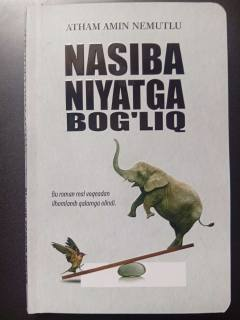

NNNiyat va hayotiy sinovlar haqida real voqealarga asoslangan ta'sirli roman.
Ushbu roman real voqealarga asoslangan bo'lib, inson hayotidagi kutilmagan sinovlar va niyatning o'rni haqida hikoya qiladi. Bosh qahramon o'z mas'uliyatsizligi va oilasiga tushgan kutilmagan tashvishlar sabab hayotini qayta ko'rib chiqishga majbur bo'ladi.